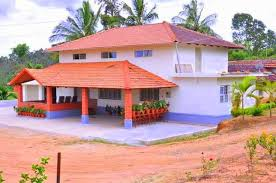

MY HOME

There is nothing in the world as sweet as a home”. ‘East or West, home is the best’ as the saying goes. Home is the symbol of human togetherness- a place where all of us learn the first steps of life. For most people the very thought of home brings fond memories, nostalgic feelings and sad emotions.
My home is situated in a suburb called Gandhi Nagar in the city of Guwahati, the capital of Assam. I was born in this city although my parents have migrated to the place due to service and occupation.
As for me, I feel a part and parcel of the city and consider it as my hometown. The locality where I live falls within the periphery of Guwahati Club, one of the major commercial centres of the city and is noted for its educational institutions, Sports facilities and green surroundings. My house is only a few yards from this commercial centre. The area is inhabited mostly by government servants, high-ranking officials and bureaucrats
My house is situated at the side of a bye-lane leading to Guwahati club. It is a two-storied building constructed by my father about ten years ago. The top floor has been rented out. The ground floor, which we use, has four bedrooms, a drawing room part which also serves as a dinning room, a kitchen and a bathroom.
My brother and myself share a room, while a room has been given to my elder sister. The third room which is the largest room in the house is used by our parents while the fourth room is kept as a guest room. All the living rooms have floor carpets, while the drawing room where we entertain our guests and watch T.V. has marble floor and an artistically carved showcase. The showcase contains numerous trophies, beautiful mementos and several attractive handicraft exhibits.
The house has a little porch in front where my father keeps his car. The portion between the porch and the road is used for gardening, which is taken care of by my mother. There is a small patch of land behind the house which is used for cultivation of vegetables and for dumping of scraps and useless articles of the house.
My house is situated at the side of a bye-lane leading to Guwahati club. It is a two-storied building constructed by my father about ten years ago. The top floor has been rented out. The ground floor, which we use, has four bedrooms, a drawing room part which also serves as a dinning room, a kitchen and a bathroom.
My brother and myself share a room, while a room has been given to my elder sister. The third room which is the largest room in the house is used by our parents while the fourth room is kept as a guest room. All the living rooms have floor carpets, while the drawing room where we entertain our guests and watch T.V. has marble floor and an artistically carved showcase. The showcase contains numerous trophies, beautiful mementos and several attractive handicraft exhibits.
The house has a little porch in front where my father keeps his car. The portion between the porch and the road is used for gardening, which is taken care of by my mother. There is a small patch of land behind the house which is used for cultivation of vegetables and for dumping of scraps and useless articles of the house.